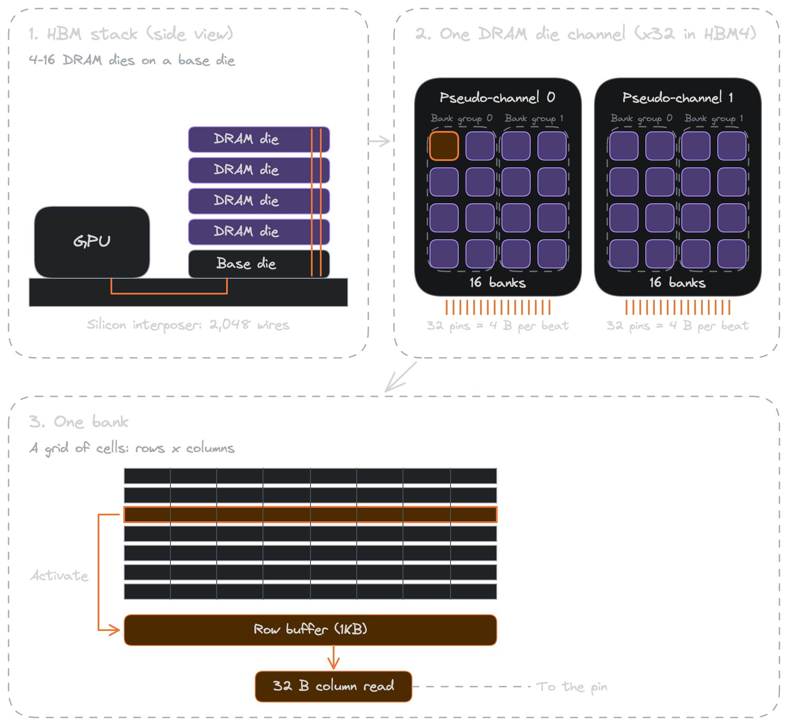
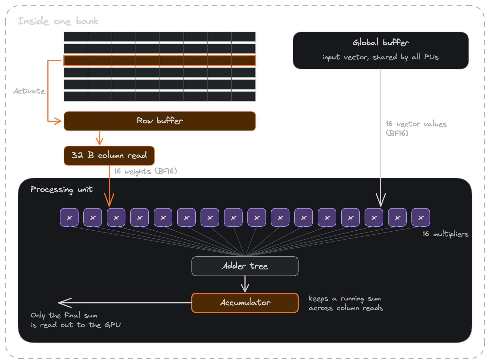
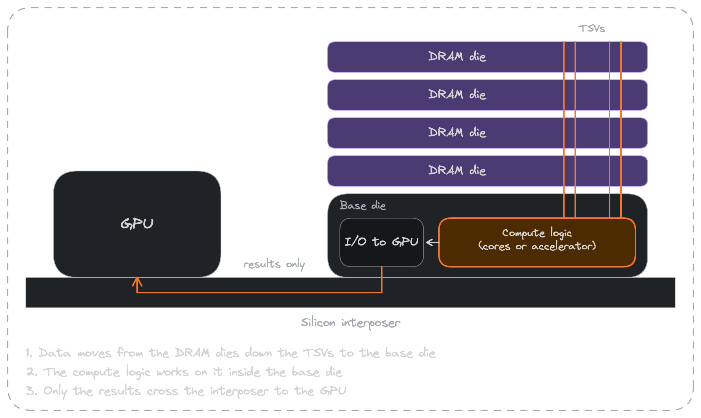

The Von-Neumann Bottleneck and Moving Compute to Data
November 25, 2026
"Not only is this tube [between processor and memory] a literal bottleneck for the data traffic a problem, but, more importantly, it is
an intellectual bottleneck that has kept us tied to word-at-a-time thinking instead of encouraging us to think in
terms of the larger conceptual units of the task at hand."
— John Backus on the von Neumann bottleneck, 1977 Turing Award Lecture
Backus was making a point about programming languages, but his framing also describes the two ways we make programs faster:
- Reduce the work. Improve a program’s algorithms to compute less and move less data
- Move data faster. Increase the rate at which data travels between memory and the processor
The first is limited by mathematics: there is a certain amount of minimum computation and data accesses needed to solve a problem.
The second is limited by physics: I/O pins at the chip's edge, the wiring density on the package and much more.
High Bandwidth Memory (HBM) shows the bottleneck clearly. Each HBM generation has increased the bandwidth of the memory to
processor interconnect but the banks inside the stacks can supply far more data than the interconnect can carry. Since HBM2,
the banks’ combined bandwidth has been roughly eight times the external bandwidth (Table 1).
| HBM Generation | Interface width (bits) | External Bandwidth (TB/s) | Internal Bandwidth (TB/s) |
|---|
| HBM1 | 1024 | 0.128 | 0.51 |
| HBM2 | 1024 | 0.256 | 2.05 |
| HBM2E | 1024 | 0.41–0.46 | 3.28–3.69 |
| HBM3 | 1024 | 0.819 | 6.55 |
| HBM3E | 1024 | 1.18–1.23 | 9.44–9.83 |
| HBM4 | 2048 | 2 | 16.4 |
Table 1: External (interface) vs. internal (combined bank) bandwidth per HBM stack
Inside an HBM4 stack
Figure 1 shows the different structures inside an HBM4 stack. The stack is a tower of 4–16 DRAM dies
sitting on a base die. The dies are connected vertically by through-silicon vias (TSVs), which are wires that run
straight through the silicon and sit next to the GPU on a silicon interposer. This contains the 2,048 data wires
between them meaning 2,048 bits move between the stack and the GPU in every beat1.[1]A beat is a single transfer on the data wires, in which each wire carries one bit. HBM transfers data on both the rising and falling edges of the clock, so one clock cycle equals 2 beats.

Figure 1: Breakdown of an HBM4 stack
The stack's interface is split into independent channels (32 in HBM4), each 64 bits wide (32 × 64 = 2,048). Each
channel is further split into two 32-bit pseudo-channels, and each pseudo-channel has 16 banks each consisting of a grid of DRAM cells arranged in rows and columns.
This means, every beat, a maximum of 4 bytes (32 bits) can be transferred from a single pseudo-channel. A read from a bank is done in the following stages:
- Activate (ACT): the memory controller opens one row, and the entire row (1 KB) is copied from
the cells into the bank's row buffer.
- Read (RD): the controller selects a column in the row buffer, and that column's 32 bytes are
sent out to the pins over 8 beats (4 bytes per beat). Future reads from the same open row skip the activate step (similar to caching).
- Precharge (PRE): the row is closed and written back to the cells, so the bank is ready to open
a different row.
Every column read from a bank's row buffer returns 32 bytes but since only 4 bytes can leave the pseudo-channel per beat, sending a
single column read to the GPU takes 8 beats, or 4 clock cycles. All 16 banks in a pseudo-channel can have a row open at
the same time, so 16 × 32 = 512 bytes can theoretically be used, but we end up being memory-bound because of the
number of pins per pseudo-channel.
Moving compute to the data: PIM and PNM
If the data cannot leave the memory fast enough, the alternative is to move the computation closer to where the data
already is. Two families of designs have been proposed, and the difference between them is where the compute logic
sits2:[2]Regular DRAM has no base die. In HBM, the base die and the DRAM dies can be made in different processes. Up to HBM3E, base dies were made in the DRAM maker's own process, but starting with HBM4 they can be made in a logic process at foundries like TSMC, allowing us to put compute there.
- Processing-in-memory (PIM) puts a small processing unit next to each bank on the DRAM die. This
processing unit works on the data in the row buffer without sending it over the pins. Commercial PIM-based memory products already exist, such as Samsung's
HBM-PIM, SK hynix's
GDDR6-AiM, Samsung's
LPDDR5-PIM and
UPMEM's PIM DIMMs. Figure 2 below shows an example of a circuit that completes the multiply-accumulate (MAC) operation in SK hynix's AiM. Each 32-byte column read gives the processing unit 16 BF16 weights. Its 16 multipliers multiply them with 16 values of the input vector from the shared global buffer, so the full column read is used in a single step. An adder tree sums the 16 products together, the accumulator adds that to a running total across column reads and only the final result is sent to the GPU.

Figure 2: PIM: a multiply-accumulate unit next to each bank, based on SK hynix's AiM.
- Processing-near-memory (PNM) keeps memory and logic on separate dies that sit close together. For
regular DRAM, the logic sits in a separate chip beside the memory. This could be the buffer chip on a DIMM or a controller
behind a CXL link, and commercial products like Marvell's
Structera A
already do this. In HBM, the natural place for the logic is the base die. A compute unit there (for example, a small
RISC-V core or an accelerator) would send commands to the DRAM dies above it and work on the data without sending it
across the interposer to the GPU. This has not shipped yet, but memory makers such as Samsung have it on their
HBM roadmaps.

Figure 3: PNM: compute logic on the HBM base die.
Finding the sweet spot
| Topic | PIM | PNM |
|---|
| Where the logic sits | On the DRAM die, next to each bank | On a separate die (HBM base die, DIMM buffer chip or CXL controller) |
| Bandwidth to the logic | Each bank's full internal bandwidth | Same as the memory's external interface |
| Area | Takes space from the memory, so less capacity per die | Has its own die, so memory capacity is unaffected |
| Energy | Lowest, since there is no data movement off the DRAM die | Higher than PIM, since data moves to a separate die, but lower than sending it all to the GPU |
| Circuit complexity | Simple units (small ALUs or cores), since DRAM processes make slow, power-hungry logic | Complex logic (full cores, accelerators), built in a fast logic process |
Table 2: PIM vs. PNM
Both PIM and PNM show immense potential to overcome the memory bottleneck, since both reduce the amount of data movement.
However, they differ drastically depending on which
metric you look at (Table 2). Since neither has been deployed at scale in datacenters yet, it is too early to say which
one is better there. My view is that PNM is the better bet, because it strikes a balance between two important aspects:
- Data movement and memory area. PNM only moves data as far as the base die which uses far less energy than moving to the GPU.
PIM moves even less data, but it pays in area: it puts a processing unit beside every bank, taking space away from the memory. The more
area spent on logic, the more power it draws, and PIM's logic is built in a DRAM process that is less power-efficient
per operation, so its compute adds power usage to the DRAM dies. PNM keeps its logic
off the DRAM dies, so the memory loses no capacity. As datacenters become increasingly limited by power, this
balance matters increasingly.
- What the logic can do. PNM can run less complex computation than the GPU's streaming
multiprocessors (SMs) because it has a smaller power budget, but it can run much more complex circuits than PIM, since its logic is built in a fast logic
process.
|